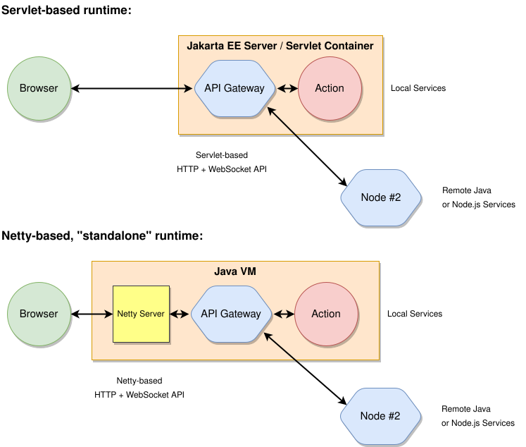
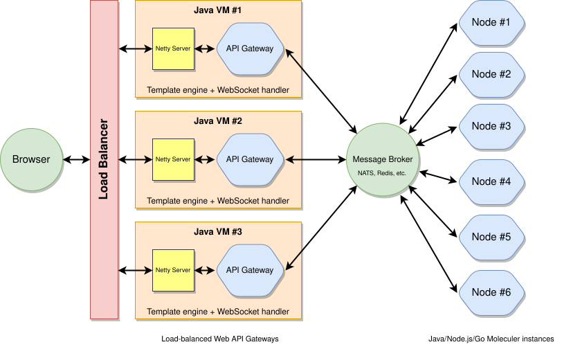
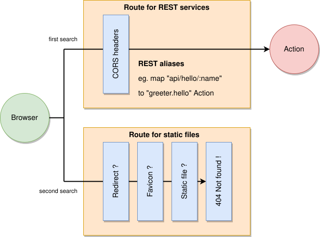

# About API Gateway
Moleculer API Gateway is a Service that makes other Moleculer Services available through REST.
It allows to create high-performance, non-blocking, distributed web applications.
Web request processing can be fine tuned using server-independent middlewares.
Moleculer API Gateway provides full support for high-load React, Angular or VueJS applications.
# Features
- Same code can run as a Jakarta EE Servlet or as a high-performance Netty application without changing a single program line
- WebSocket support (same API for Netty Server and Jakarta EE Servers)
- Supports server-side template engines (FreeMarker, Pebble, Thymeleaf, Mustache, Handlebars, Velocity)
- Many built-in middlewares (ServeStatic, CORS headers, custom error messages, etc.)
The Moleculer API Gateway is compatible with the following Servlet Containers / Jakarta EE Servers:
- Apache Tomcat V10.1 and V11
- Eclipse Jetty V12
- Red Hat JBoss EAP V8 / WildFly V31+
- GlassFish Server Open Source Edition V7
- Payara Server V6
- IBM WebSphere Liberty / Open Liberty
API Gateway may work with other servers, too (it's built on the standard Jakarta Servlet 6.0 API).

It is also possible to implement a design where only the API Gateway and NettyServer services are present in the Moleculer nodes. Within Moleculer nodes, HTTP requests can be distributed through a HTTP Load Balancer. These Moleculer nodes perform static HTTP servicing and, if necessary, HTML transforms. REST requests are transmitted through a Message Broker (or directly via TCP Transporter) to multiple nodes running in the background. The number of servers (Moleculer nodes) can vary depending on the load.

# Download
Maven
<dependencies>
<dependency>
<groupId>com.github.berkesa</groupId>
<artifactId>moleculer-java-web</artifactId>
<version>2.0.0</version>
<scope>runtime</scope>
</dependency>
</dependencies>
# Short Example
The simplest way to create a REST service using Moleculer is the following:
new ServiceBroker()
.createService(new NettyServer())
.createService(new ApiGateway("**"))
.createService(new Service("math") {
Action add = ctx -> {
return ctx.params.get("a", 0) +
ctx.params.get("b", 0);
};
}).start();
Why both
NettyServerandApiGateway? They are two layers.NettyServeris the HTTP server — it opens the socket and speaks HTTP (default port 3000).ApiGatewayis the router/dispatcher that maps incoming HTTP requests to Moleculer actions (new ApiGateway("**")publishes every action). In Node.js the singlemoleculer-webmixin does both jobs; Java keeps them separate, so you can swap the HTTP layer — e.g. deploy inside a Jakarta EE servlet container instead of Netty — without touching your routing.
After starting the program, enter the following URL into your browser:
http://localhost:3000/math/add?a=3&b=6
The response will be "9". The above service can also be invoked using a POST method.
To do this, submit the {"a":3,"b":5} JSON (as POST body) to this URL:
http://localhost:3000/math/add
You can access all services, including internal "$node" Service.
Example URLs
- Call test.hello action:
http://localhost:3000/test/hello - Get health info of node:
http://localhost:3000/~node/health - List of nodes in cluster:
http://localhost:3000/~node/list - List of Event listeners:
http://localhost:3000/~node/events - List of Services:
http://localhost:3000/~node/services - List of Actions:
http://localhost:3000/~node/actions
# Detailed Example
This demo project (opens new window)
demonstrating some of the capabilities of APIGateway.
The project can be imported into the Eclipse IDE or IntelliJ IDEA.
The brief examples illustrate the following:
- Integration of Moleculer API into the Spring Boot Framework
- Configuring HTTP
RoutesandMiddlewares - Creating non-blocking Moleculer
Services - Publishing and invoking Moleculer
Servicesas RESTServices - Generating HTML pages in multiple languages using Template Engines
- Using WebSockets (sending real-time server-side events to browsers)
- Using file upload and download
- Video streaming and server-side image generation
- Creating a WAR from the finished project (Servlet-based runtime)
- Run code without any changes in "standalone mode" (Netty-based runtime)
# Routes
Like Express.js (opens new window),
Moleculer Moleculer groups request processors (Middlewares) into different Routes.
Each Route can have one or more Middlewares, which are executed when the Route is matched.
Routes are matched in the order they are added to the API Gateway.
When a request arrives the API Gateway will step through each Route,
and examines whether the Route handles the request.
If the Route handles the request, the API Gateway does not call the next Route.
The following code is an example of a basic Route:
// Create then add a Route to API Gateway
Route route = new Route();
gateway.addRoute(route);
// ...or in short:
Route route = gateway.addRoute(new Route());
# Mapping policy
Routes have a "mappingPolicy" property to handle Routes without Aliases.
Available options
- RESTRICT - enable to request only the
Routeswith Aliases (default) - ALL - enable to request all
Routeswith or without Aliases
Route route = gateway.addRoute(new Route(MappingPolicy.RESTRICT));
route.addAlias("POST", "add", "math.add");
In this case, Action can only be called on the "/add" path using the "POST" method.
This Action is not available with another URL or method.
# Whitelist
If you don't want to publish all Actions, you can filter them with whitelist option.
Use match strings or regexp in list. To enable all actions, use "**".
ServiceBroker broker = new ServiceBroker();
ApiGateway gateway = new ApiGateway();
Route route = gateway.addRoute(new Route("/api"));
/**
* Access any actions in "posts" Service, eg:
* http://localhost:3000/api/posts/action
*/
route.addToWhiteList("posts/*");
/**
* Allow access to "users/list" Action, eg:
* http://localhost:3000/api/users/list
*/
route.addToWhiteList("users/list");
/**
* Access any actions in "math" service using regex, eg:
* http://localhost:3000/api/math/add?a=1&b2
*/
route.addToWhiteList("^/math/\\S+$");
// Install Netty web server and ApiGateway
broker.createService(new NettyServer());
broker.createService(gateway)
broker.start();
# Aliases
You can use Alias names instead of Action names.
You can also specify the method. Otherwise it will handle every method types.
Using named parameters in aliases is possible.
Named parameters are defined by prefixing a colon to the parameter name (":name").
ServiceBroker broker = new ServiceBroker();
ApiGateway gateway = new ApiGateway();
Route route = gateway.addRoute(new Route());
// Call "auth.login" action with "GET /login" or "POST /login"
route.addAlias("login", "auth.login");
// Restrict the request method
route.addAlias("POST", "users", "users.create");
// The "name" comes from the URL, eg:
// http://localhost:3000/greeter/Jessica
route.addAlias("GET", "greeter/:name", "test.greeter");
// Cover "view.render" Action with a "virtual" HTML page:
// http://localhost:3000/pages/table.html
route.addAlias("GET", "pages/table.html", "view.render");
// Install Netty web server and ApiGateway
broker.createService(new NettyServer()).createService(gateway).start();
You can also create RESTful APIs:
route.addAlias("GET", "users", "users.list");
route.addAlias("GET", "users/:id", "users.get");
route.addAlias("POST", "users", "users.create");
route.addAlias("PUT", "users/:id", "users.update");
route.addAlias("DELETE", "users/:id", "users.remove");
For REST routes you can also use this simple shorthand alias:
route.addAlias("REST", "users", "users");
WARNING
To use this shorthand alias, create a Service which has "list", "get", "create", "update" and "remove" actions.
# HTTP Middlewares
HTTP Middleware is used to intercept the client request and do some pre-processing.
It can also intercept the response and do post-processing before sending to the client in web application.
Some common tasks that we can do with HTTP Middlewares are:
- Formatting of request body or header before sending it to
Action. - Authentication and autherization of request for resources.
- Logging request parameters.
- Alter response by adding some cookies or header information.
- End the request-response cycle.
You can extend the HttpMiddleware abstract class to create an HTTP Middleware.
HTTP Middlewares can be added globally or at Route-level to the ApiGateway.
Bind Middleware to an instance of the API Gateway object by using the "gateway.use(middleware)" function.
Route-level Middleware works in the same way as global Middleware,
except it is bound to an instance of Route.
Middlewares is executed in reverse order as they are added to Routes (or to the ApiGateway):
route.use(new LastMiddleware()); // Executed LAST
route.use(new ThirdMiddleware());
route.use(new SecondMiddleware());
route.use(new FirstMiddleware()); // Executed FIRST

Moleculer's HTTP Middlewares use very similar logic to
Middlewares of Express.js (opens new window).
The following example implements an "empty" Middleware that passes the request without modification:
public class MyMiddleware extends HttpMiddleware {
public RequestProcessor install(RequestProcessor next, Tree config) {
// Create new "RequestProcessor" or return "null", this is
// decided by the "config" which contains the Action parameters.
// If you return "null", you won't install Middleware for the Action.
return new AbstractRequestProcessor(next) {
public void service(WebRequest req, WebResponse rsp) throws Exception {
// --- FUNCTIONS BEFORE CALLING THE ACTION ---
// Do nothig, just invoke next Middleware or Action
next.service(req, rsp);
// --- FUNCTIONS AFTER CALLING THE ACTION ---
}
};
}
}
The chain of the Route can be terminated if you do not call "next.service" but fill in "rsp" with the answer
(for example, sending a regular "403 Forbidden" HTTP error message). The
GitHub page (opens new window)
of the API Gateway project has many examples of HTTP Middlewares.
There is another kind of middleware in the Moleculer Framework; the Middleware.
The Middleware is similar to HttpMiddleware, but it processes internal Action calls instead of HTTP requests.
Read more about Middlewares
# Multiple Routes
Complex web applications require multiple Routes.
Usually one Route is required for REST services and one for static content
(HTML pages, CSS files, images, etc.).
The policy for REST Route "RESTRICT" (this is the default policy)
because only the REST services that are configured can be called.
The policy for static Route is "ALL" because it accepts all requests
and returns a "404 Not Found" message if the requested file is not exists:
// Create Route for REST services:
Route restRoute = gateway.addRoute(new Route());
restRoute.use(new CorsHeaders());
restRoute.setCallOptions(CallOptions.retryCount(3));
restRoute.addAlias("GET", // Allowed HTTP method
"api/hello/:name", // Path alias
"greeter.hello"); // Action
// Create Route for static files:
Route staticRoute = gateway.addRoute(new Route());
staticRoute.setMappingPolicy(MappingPolicy.ALL);
staticRoute.use(new NotFound());
staticRoute.use(new ServeStatic("/", "/www"));
staticRoute.use(new Favicon("/www/img/favicon.ico"));
staticRoute.use(new Redirector("/", "index.html", 307));

# Route hooks
API Gateway has before & after call hooks. The "setBeforeCall" and "setAfterCall" functions provide low-level access to the HTTP request or response:
gateway.setBeforeCall((currentRoute, req, rsp, data) -> {
if (req.getPath().startsWith("/api/upload")) {
// Copy remote address into the "meta" block,
// so this value will be visible to the Action
Tree meta = data.getMeta();
meta.put("address", req.getAddress());
}
});
The "getInternalObject" function can be used to access the actual HttpServletRequest,
HttpServletResponse or Netty's ChannelHandlerContext object:
gateway.setBeforeCall((currentRoute, req, rsp, data) -> {
Object internal = req.getInternalObject();
if (internal instanceof ChannelHandlerContext) {
// Moleculer is running under Netty
ChannelHandlerContext nettyRequest =
(ChannelHandlerContext) internal;
} else {
// Moleculer is running under Jakarta EE Server
HttpServletRequest servletRequest =
(HttpServletRequest) internal;
}
});
# Response type & status code
When the response is received from an Action,
the API Gateway checks the "meta" block to see if it contains certain special fields.
With these meta fields, you can change the "Content-Type" header,
the status code of the response and add any HTTP header to the response.
Special meta fields
- ctx.meta.$statusCode - Status code (eg. 200, 404) of the HTTP response message
- ctx.meta.$responseType - Content-Type header's value of the HTTP response message
- ctx.meta.$responseHeaders - Set of response headers (it's a Map, not a single value)
- ctx.meta.$location - Location in header for redirects (relative URL)
- ctx.meta.$template - Name of the HTML template (eg. "test" means "test.html")
- ctx.meta.$locale - Locale (~= language) of the generated HTML page (eg. "de", "fr", "en_uk")
- ctx.meta.$session - Variables of the current HTTP-session
Example: Invoke Template Engine
Action list = ctx -> {
// Create response "JSON"
Tree rsp = new Tree();
rsp.put("name", "value")
// Get the hidden meta block of the response
Tree meta = rsp.getMeta();
// Set status code and Content-Type
meta.put("$statusCode", 200);
meta.put("$responseType", "text/html");
// Add extra HTTP headers
Tree headers = meta.putMap("$responseHeaders");
headers.put("X-Header-Name1", "Header-Value1");
headers.put("X-Header-Name2", "Header-Value2");
headers.put("X-Header-Name3", "Header-Value3");
// Convert response by using
// server-side Template Engine
meta.put("$template", "test"); // test.html
meta.put("$locale", "en_us"); // Locale (optional)
// Return response
return rsp;
};
Example: Send image file to browser
The "Content-Type" value, status code and other HTTP headers
can be changed even if the answer is a Moleculer Stream.
Since PacketStream has no "meta", it needs to be wrapped in a
Tree (opens new window) object:
Action list = ctx -> {
// Open Stream
PacketStream stream = ctx.createStream();
// Trasfer data from file
stream.transferFrom(new File("/image.png"));
// Stream is wrapped in a Tree object,
// it's just for the meta (Stream has no meta)
Tree rsp = new CheckedTree(stream);
// Get the meta block
Tree meta = rsp.getMeta();
// Set the Content-Type of the response
meta.put("$responseType", "image/png");
// Return response (and the Stream in it)
return rsp;
};
Example: Dynamic content generation
The following Action will be available at:
http://localhost:3000/dynamic.txt
This was set by the "@HttpAlias" Annotation.
The same could be done by adding a similar Alias to Route.
`@HttpAlias` vs. `route.addAlias(...)`
Both map a URL to an action. Use @HttpAlias (on the action field) when the route belongs with
the action — it travels with the service class and needs no gateway wiring. Use
route.addAlias(...) when you configure routing centrally on the gateway: one place to see every
route, to attach per-route middlewares, or to use the "REST" resource shorthand.
@HttpAlias(method = "GET", path = "/dynamic.txt")
Action img = ctx -> {
// Response text
String text = "Server time: " + new Date();
// Send text as PacketStream
PacketStream stream = ctx.createStream();
byte[] bytes = text.getBytes(StandardCharsets.UTF_8);
stream.sendData(bytes);
stream.sendClose();
// Set HTML headers of the response
Tree rsp = new CheckedTree(stream);
Tree headers = rsp.getMeta().putMap("$responseHeaders");
headers.put("Content-Length", bytes.length);
// Same as "$responseType" just set it here as header
headers.put("Content-Type", "text/plain; charset=utf-8");
return rsp;
};
Typing the URL ".../dynamic.txt" into your browser
will display content similar to the following:
Server time: Tue Jan 21 16:09:22 CET 2020
# Built-in Middlewares
Moleculer API Gateway contains many pre-built HTTP Middlewares.
These Middleware's can be integrated into web applications to speed up application development.
# ServeStatic Middleware
Middleware to serve files from a specified root directory. If the file is not
found, it sends a 404 response. ServeStatic supports content compression,
automatic "Content-Type" detection, and ETAGs.
The specified directory (the "/www" in the example below)
can be in the file system or on the classpath.
[source (opens new window)]
// Simple usage
ServeStatic staticHandler = new ServeStatic("/", "/www");
staticHandler.setEnableReloading(true) // Turn off in production mode
route.use(staticHandler);
// Middlewares of a typical web server (in the correct order)
route.use(new NotFound()); // To be executed last (404 Not Found)
route.use(new ServeStatic("/", "/www")); // Static files (html, css, etc.)
route.use(new Favicon("/www/img/favicon.ico")); // Favicon (file or classpath)
route.use(new Redirector("/", "index.html", 307)); // Jump to default page
# Redirector Middleware
Redirects requests from a specified location to an another location. [source (opens new window)]
// Any requests to the root path "/"
// will cause the "index.html" page to be served.
route.use(new Redirector("/", "index.html", 307));
// Jump from multiple path to default page
route.use(new Redirector("/", "index.html"));
route.use(new Redirector("/index.htm", "index.html"));
route.use(new Redirector("/default.html", "index.html"));
# NotFound Middleware
Refuses all HTTP requests with "Error 400 Not Found" message. [source (opens new window)]
// Usage with "ServeStatic" and "Favicon" middlewares:
route.use(new NotFound()); // Executed last
route.use(new ServeStatic("/", "/www")); // Executed second
route.use(new Favicon("/www/images/custom.ico")); // Executed first
# Favicon Middleware
Handles "/favicon.ico" HTTP requests.
Favicons can be specified using a path to the filesystem,
or by default this Middleware will look for a file on the classpath with the name "favicon.ico".
[source (opens new window)]
route.use(new Favicon("custom.ico"));
# BasicAuthenticator Middleware
Simple middleware that provides HTTP BASIC Authentication support.
When the BasicAuthenticator Middleware receives this information,
it calls the configured BasicAuthProvider with the username and password to authenticate the user.
If the authentication is successful the handler attempts to authorise the user.
If that is successful then the routing of the request is allowed to continue to the application handlers,
otherwise a 403 response is returned to signify that access is denied.
[source (opens new window)]
// Allow only one user
route.use(new BasicAuthenticator("user", "password"));
// Allow multiple users
BasicAuthenticator authenticator = new BasicAuthenticator();
authenticator.addUser("user1", "password1");
authenticator.addUser("user2", "password2");
route.use(authenticator);
// Use custom authenticator
BasicAuthenticator authenticator = new BasicAuthenticator();
authenticator.setProvider((broker, username, password) -> {
// Allow usernames starting with "xyz"
return username.startsWith("xyz");
});
route.use(authenticator);
# Token / JWT authentication
There is no built-in JWT middleware, but token auth is a short custom
HttpMiddleware — the same shape as BasicAuthenticator, except it checks a
bearer token instead of a username/password. Read the Authorization header, verify the token, and
either terminate with 401 or call next.service(...) to let the request continue:
public class JwtAuthenticator extends HttpMiddleware {
public RequestProcessor install(RequestProcessor next, Tree config) {
return new AbstractRequestProcessor(next) {
public void service(WebRequest req, WebResponse rsp) throws Exception {
String auth = req.getHeader("Authorization"); // "Bearer <token>"
if (auth == null || !auth.startsWith("Bearer ")
|| !isValidToken(auth.substring(7))) {
rsp.setStatus(401); // reject -> stop the chain
rsp.end();
return;
}
next.service(req, rsp); // token OK -> continue
}
};
}
// Verify and decode the token with your preferred JWT library (e.g. jjwt, java-jwt):
private boolean isValidToken(String token) {
// ...
return true;
}
}
Install it like any other middleware: route.use(new JwtAuthenticator()). To pass decoded claims on
to your actions, write them into the request meta before calling next.service(...).
# CorsHeaders Middleware
Implements server side CORS (opens new window) support for Moleculer. Cross Origin Resource Sharing is a mechanism for allowing resources to be requested from one host and served from another. [source (opens new window)]
// Allow all
route.use(new CorsHeaders());
// With custom CORS parameters
CorsHeaders cors = new CorsHeaders();
cors.setOrigin("*");
cors.setMethods("GET");
cors.setMaxAge(60);
route.use(cors);
# ErrorPage Middleware
Custom error page (Error 404, 500, etc.) handler. Error templates can contain the following variables: [source (opens new window)]
| Variable | Content |
|---|---|
| {status} | HTTP status code |
| {message} | Error message |
| {stack} | Stack trace |
Sample error template
<html>
<body>
<h1>{message}</h1>
<p>{status}</p>
<pre>{stack}</pre>
</body>
</html>
Defining status-specific error templates
// Default error template
ErrorPage errorPages = new ErrorPage("error-default.html");
// Status-specific templates
errorPages.setTemplate(404, "error-404.html");
errorPages.setTemplate(500, "error-500.html");
route.use(errorPages);
# HostNameFilter Middleware
The HostNameFilter adds the ability to allow or block requests based on the host name of the client.
[source (opens new window)]
HostNameFilter filter = new HostNameFilter();
filter.allow("domain.server**"); // Allow all with this prefix
filter.deny("domain.server22"); // Except this
route.use(filter);
# IpFilter Middleware
The IpFilter Middleware adds the ability to allow or block requests based on the IP address of the client.
[source (opens new window)]
IpFilter filter = new IpFilter();
filter.allow("150.10.**", "255.12.34.*"); // Let's enable them
filter.deny("150.10.0.0"); // Except this
route.use(filter);
# RateLimiter Middleware
Rate Limiter limits concurrent constant requests to the HTTP calls in the application. [source (opens new window)]
// Allow up to 50 requests / second (default)
route.use(new RateLimiter());
// Allow up to 100 requests / 2 minutes
RateLimiter limiter = new RateLimiter();
limiter.setRateLimit(100);
limiter.setWindow(2);
limiter.setUnit(TimeUnit.MINUTES);
route.use(limiter);
Annotation-driven rate limiting
// Restrict to annotated Actions only
route.use(new RateLimiter(false));
// ...and in the Service
@RateLimit(value = 100, window = 2, unit = "MINUTES")
Action render = ctx -> {
return null;
};
# RequestLogger Middleware
Writes request headers and response headers + response body into the log. Request body not logged in this version. WARNING: Using this middleware reduces the performance (nevertheless, it may be useful during development). Be sure to turn it off in production mode. [source (opens new window)]
route.use(new RequestLogger());
# ResponseDeflater Middleware
Compresses body of REST responses. Do not use it with ServeStatic Middleware;
ServeStatic also compresses the data. Use it to compress the response of REST
services.
[source (opens new window)]
route.use(new ResponseDeflater(Deflater.BEST_SPEED));
WARNING
Using compression reduces performance, so use it only on slow networks.
# ResponseHeaders Middleware
This Middleware unconditionally adds the specified headers to any HTTP response within the Route.
[source (opens new window)]
// Add single header to HTTP responses
route.use(new ResponseHeaders("X-Robots-Tag", "noindex"));
// Add multiple headers to HTTP responses
ResponseHeaders securityHeaders = new ResponseHeaders();
securityHeaders.set("X-Download-Options", "noopen");
securityHeaders.set("X-Content-Type-Options", "nosniff");
securityHeaders.set("X-XSS-Protection", "1; mode=block");
securityHeaders.set("X-FRAME-OPTIONS", "DENY");
securityHeaders.set("Strict-Transport-Security", "max-age=12345000");
route.use(securityHeaders);
# ResponseTime Middleware
Adds "X-Response-Time" header to the response, containing the time taken in MILLISECONDS to process the request. [source (opens new window)]
// With "X-Response-Time" header
route.use(new ResponseTime());
// With custom header name
route.use(new ResponseTime("X-Custom"));
# ResponseTimeout Middleware
Middleware that will timeout requests if the response has not been written
after the specified time. HTTP response code will be "408".
[source (opens new window)]
route.use(new ResponseTimeout(1000L * 30));
# SessionCookie Middleware
Generates Session Cookies, and sets the cookie header. [source (opens new window)]
// With "JSESSIONID" cookie
route.use(new SessionCookie());
// With custom cookie name
route.use(new SessionCookie("SID"));
The services.moleculer.web.middleware.session.SessionHandler object uses
"beforeCall" and "afterCall" hooks to store the "$session" structure of the request meta block.
By default, SessionHandler keeps the contents of the "$session" blocks in memory for a specified time.
SessionHandler looks for "$session" block based on the Session Cookie
and copies it to all HTTP requests for the Session. This feature requires SessionCookie Middleware
if the application is running on a Netty server (Jakarta EE servers have their own cookie manager).
SessionHandler sessionHandler = new SessionHandler(broker);
gateway.setBeforeCall(sessionHandler.beforeCall());
gateway.setAfterCall(sessionHandler.afterCall());
If you need to perform other functions in the "beforeCall" or "afterCall" block,
you can call the SessionHandler as follows:
SessionHandler sessionHandler = new SessionHandler(broker);
CallProcessor loadSession = sessionHandler.beforeCall();
gateway.setBeforeCall((currentRoute, req, rsp, data) -> {
loadSession.onCall(currentRoute, req, rsp, data);
// Other beforeCall" functions...
});
CallProcessor saveSession = sessionHandler.afterCall();
gateway.setBeforeCall((currentRoute, req, rsp, data) -> {
saveSession.onCall(currentRoute, req, rsp, data);
// Other "afterCall" functions...
});
Actions access the persistent "$session" block as follows:
Action action = ctx -> {
// Get the persistent "$session" block
Tree meta = ctx.params.getMeta();
Tree session = meta.get("$session");
// Read/write session data
String userID = session.get("userID", "anon");
session.put("now", new Date());
return null;
};
# TopLevelCache Middleware
URL-based content cache. It is good for caching the responses of
non-authenticated REST services with large responses. For example, if the
service generates blog/wiki content using a HTML Template Egine. It is not
advisable to cache POST requests and/or requests that depend not only on the
URL but also on the content of the request. TopLevelCache speeds up querying
of various reports (tables, charts) and dynamically generated images.
[source (opens new window)]
// Use default cacher of ServiceBroker
Cacher cacher = broker.getConfig().getCacher();
route.use(new TopLevelCache(cacher, "/blog/posts/**"));
// Use a custom Cacher
Cacher cacher = new MemoryCacher();
route.use(new TopLevelCache(cacher, "/blog/posts/**"));
# XSRFToken Middleware
This middleware adds "X-XSRF-TOKEN" header to responses. [source (opens new window)]
route.use(new XSRFToken());
# Template engines and WebSocket
Two larger topics live on their own pages:
- Template engines (server-side HTML) — render an
Action's JSON to HTML with Mustache, Handlebars, DataTree, FreeMarker, Pebble or Thymeleaf, plus internationalization. - WebSocket handling — push realtime messages from the server to browsers (and Java clients) through the gateway.